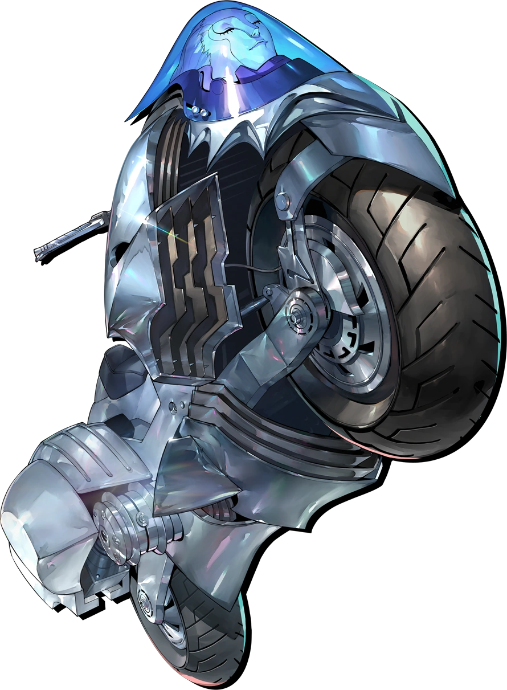
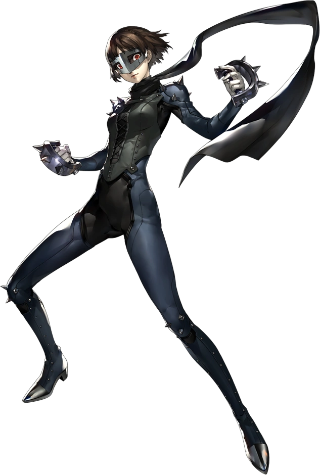

Introduction
Makoto Niijima is the sixth unlockable character in Persona 5 Royal. She is the student council president in Shujin Academy. She was asked by the principal Kobayakawa to try to find out if the Phantom Theives are people from school. She later hears Ryuji exposing that they are the Phantom Thieves. Instead of ratting them out, she gives them an offer to prove their justice by reforming a mafia boss.
Persona Unlocking
Makoto goes into Kaneshiro’s palace with the Phantom Theives. Kaneshiro taunts Makoto revealing how he is going to extort her sister. This causes Makoto to no longer allow others to decide how to discipline her and get her to unlock her persona Johanna.
Gallery
Johanna
Queen(apperence in metaverse)
Makoto Niijima
Facts about Makoto Niijima
- Code Name: Queen
- DOB(date of birth): April 23, 1999
- Age: 17
- Height: 164 cm (5'5")
- Primary Tool: Tekko
- Secondary Tool: Revolvers
- Arcana(personality): Priestress
- Persona(asssistant): Johanna